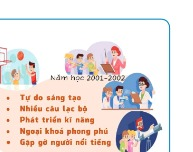

Dành cho giáo viên
Theo dõi lớp
| Học sinh / Nhóm | Đã nộp | Cập nhật |
|---|
Bước 1
1 Khởi động
Khởi động Chọn trường nào?
Minh: Chào An, bạn đã quyết định chọn trường nào sau khi tốt nghiệp THCS chưa?
An: Chưa, tớ đang phân vân giữa hai lựa chọn: trường công lập hay trường dân lập.
Minh: Trường công lập thì học phí thấp, trang thiết bị được Nhà nước đầu tư chắc là phải hơn chứ, bạn còn băn khoăn gì nữa?
An: Nhưng trường dân lập cũng có ưu điểm: kế hoạch giáo dục linh hoạt, lại có nhiều cơ hội hoạt động, tiếp xúc với các tổ chức, doanh nghiệp nữa.
Minh: Ừ nhỉ, thế thì bạn cần tìm thêm thông tin. Thông tin trên Internet rất nhiều và dễ tìm kiếm nhưng thông tin hữu ích, có chất lượng cao giúp bạn chọn đúng trường mới thật có ý nghĩa.
An: Vậy tớ sẽ tìm thông tin có chất lượng để chọn trường phù hợp với sở thích và khả năng của mình.
An: Chưa, tớ đang phân vân giữa hai lựa chọn: trường công lập hay trường dân lập.
Minh: Trường công lập thì học phí thấp, trang thiết bị được Nhà nước đầu tư chắc là phải hơn chứ, bạn còn băn khoăn gì nữa?
An: Nhưng trường dân lập cũng có ưu điểm: kế hoạch giáo dục linh hoạt, lại có nhiều cơ hội hoạt động, tiếp xúc với các tổ chức, doanh nghiệp nữa.
Minh: Ừ nhỉ, thế thì bạn cần tìm thêm thông tin. Thông tin trên Internet rất nhiều và dễ tìm kiếm nhưng thông tin hữu ích, có chất lượng cao giúp bạn chọn đúng trường mới thật có ý nghĩa.
An: Vậy tớ sẽ tìm thông tin có chất lượng để chọn trường phù hợp với sở thích và khả năng của mình.
Ghi bài Khởi động
Sau khi thầy cô chốt, em chép nội dung dưới đây vào vở.
Bước 2 · Hình thành kiến thức mới
2.1 Vai trò của chất lượng thông tin trong giải quyết vấn đề
Hoạt động 1 Chọn trường
Minh đã tìm kiếm thông tin về các trường THPT trên Internet và gửi cho An địa chỉ trang web giới thiệu về một trường THPT. An xem trang web và thấy có nhiều chi tiết ấn tượng, phù hợp với mình (Hình 2.1). Không tìm hiểu thêm nữa, An quyết định chọn trường đó làm nguyện vọng duy nhất của mình.

Đọc hiểu Nguồn tin đáng tin cậy
Đọc mục 1 (SGK trang 10). Do dựa trên thông tin chưa được kiểm chứng, quyết định của An có thể không đúng; hơn nữa, việc An chỉ đăng kí một nguyện vọng sẽ làm giảm cơ hội lựa chọn. Để đưa ra quyết định đúng, An cần sử dụng thông tin có chất lượng từ những nguồn đáng tin cậy. Internet là một kho thông tin khổng lồ, nhưng không phải số lượng bản tin mà là chất lượng của thông tin mới thực sự làm cho thông tin trở thành hữu ích. Ý nào nhóm còn tranh luận thì chọn ? để trình bày trước lớp.
Câu hỏi SGK trang 10
Ghi bài 1. Vai trò của chất lượng thông tin
Sau khi thầy cô chốt, em chép nội dung dưới đây vào vở.
Bước 2 · Hình thành kiến thức mới
2.2 Chất lượng thông tin
Hoạt động 2 Thông tin hữu ích
Mỗi bạn tự tìm kiếm trên Internet trước, sau đó cả nhóm thống nhất câu trả lời.
Đọc hiểu Bốn tiêu chí đánh giá chất lượng thông tin
Đọc mục 2 (SGK trang 10–11). Chất lượng thông tin thể hiện ở mức độ đáp ứng của thông tin đối với yêu cầu cụ thể nhằm giải quyết vấn đề, làm thông tin trở nên hữu ích. Để đánh giá chất lượng thông tin, em cần xem xét các tiêu chí (Hình 2.2):
- Tính mới (tính cập nhật): thông tin đã bị lỗi thời chưa?
- Tính chính xác: nội dung có cụ thể không, có cách để xác minh không?
- Tính đầy đủ: thông tin có bao quát nhiều khía cạnh, cho cái nhìn tổng thể không?
- Tính sử dụng được (tính liên quan, phù hợp): thông tin có liên quan đến vấn đề cần giải quyết không?
Chất lượng thông tin→
Tính mớiTính chính xácTính đầy đủTính sử dụng được
Câu hỏi SGK trang 11
Ghi bài 2. Chất lượng thông tin
Sau khi thầy cô chốt, em chép nội dung dưới đây vào vở.
Bước 3
3 Luyện tập
Luyện tập SGK trang 11
Để chuẩn bị cho chuyến tham quan một nông trại, An gọi đến số điện thoại liên lạc được cung cấp trên trang web của nông trại nhưng không được. Minh cho rằng có thể đầu số điện thoại đã thay đổi nhưng nông trại chưa kịp cập nhật lên trang web nên đã tìm kiếm thông tin trên website của các nhà cung cấp dịch vụ viễn thông. Nhờ đó, Minh đã liên hệ thành công với nông trại.
Ghi bài Luyện tập
Sau khi thầy cô chốt, em chép nội dung dưới đây vào vở.
Bước 4
4 Vận dụng
Vận dụng Máy tính điện tử kĩ thuật số đầu tiên
Em hãy tìm trên Internet thông tin về chiếc máy tính điện tử kĩ thuật số đầu tiên trên thế giới. Đánh giá chất lượng thông tin tìm được.
Ghi bài Vận dụng
Sau khi thầy cô chốt, em chép nội dung dưới đây vào vở.